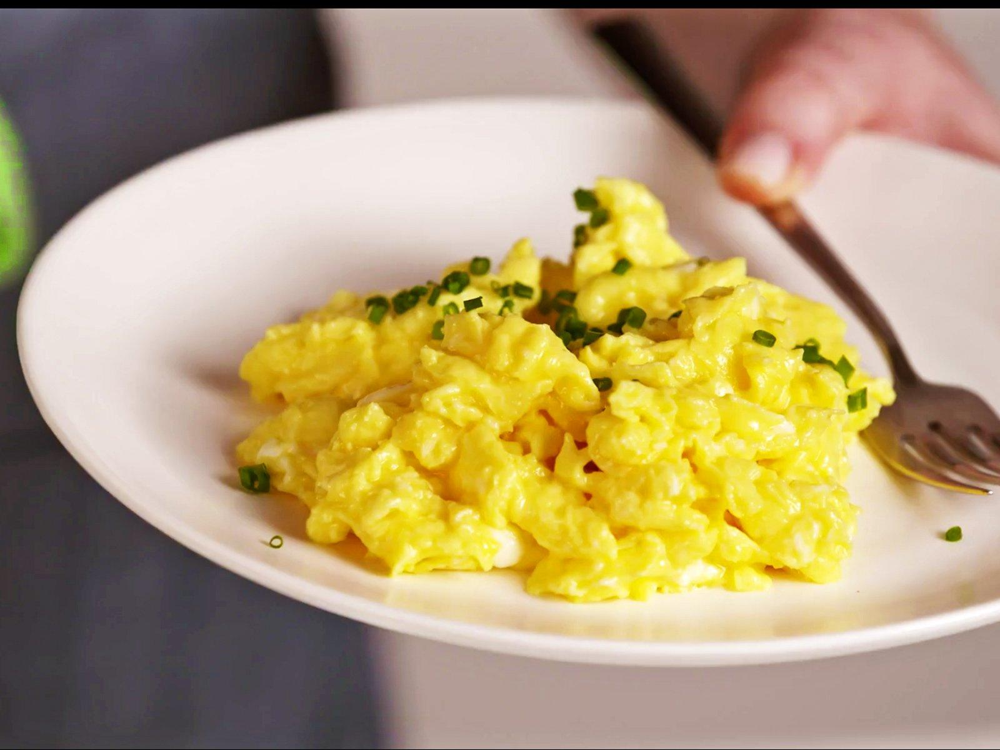

Scrambled eggs

Description
An egg dish that blends the whites and yolks of eggs with milk
and seasonings to be cooked in an open pan. Oftem eaten with
toast.
Ingredients
- 2 x eggs
- 15ml milk
- pinch of salt
- pinch of pepper
- 1/2 table spoon of butter
Method
- Crack 2 eggs into a bowl,
add 15ml (1 tbsp) of milk and a pinch of salt and black pepper.
- Beat the mixture lightly with a whisk or fork.
- Melt 1 tbsp of butter in a medium size fry pan on a low heat and
when it starts foaming, pour in the eggs and leave to set for 60-90 seconds.
- Using a spatula, gently pull the eggs from the edges of the pan into the centre.
Turn and tilt the pan so the runny eggs take up the available space and again
gently pull it towards the centre. This gentle pulling towards the centre of the
pan makes lovely, light ribbons of egg.
- Remove the pan from the heat before the egg is completely set.
Leave to sit for a minute or two so the egg can gently finish cooking in its own
heat.